Ron Higgins Music
Six decades of original songwriting, multi-instrumental performance, and independent audio engineering from Mandan, North Dakota. The sovereign solo catalog of CletusMaxx.
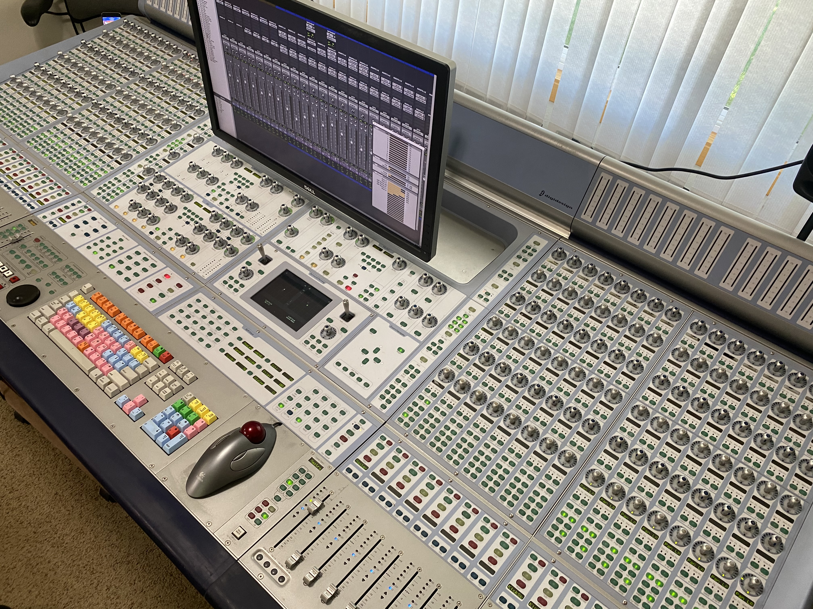
The Solo Artist & Multi-Instrumentalist
MANDAN, NORTH DAKOTA · 52+ YEARS CRAFTLong before the algorithms and corporate streaming middle-men attempted to turn human music into disposable data, Ron Higgins was crafting songs by hand from the heart of North Dakota. Operating as the creative force behind CletusMaxx, Ron created a signature prairie fusion of Pop, Blues, Jazz, and Rock that reflects both deep technical mastery and unhurried songwriting honesty.
A true multi-instrumentalist, Ron plays every instrument on his master tracks: fretless & slap bass, acoustic & electric keyboards, rhythm & lead guitars, expressive harmonica, alongside writing and singing all lead and backing vocal arrangements.
After closing commercial booking at Higgins Family Productions in 2014, Ron pivoted full-time to his personal creative quest—building out a private, world-class mastering room and launching Ron Higgins Music and CletusMaxx Music Publishing (BMI) to release his lifework directly to the world.
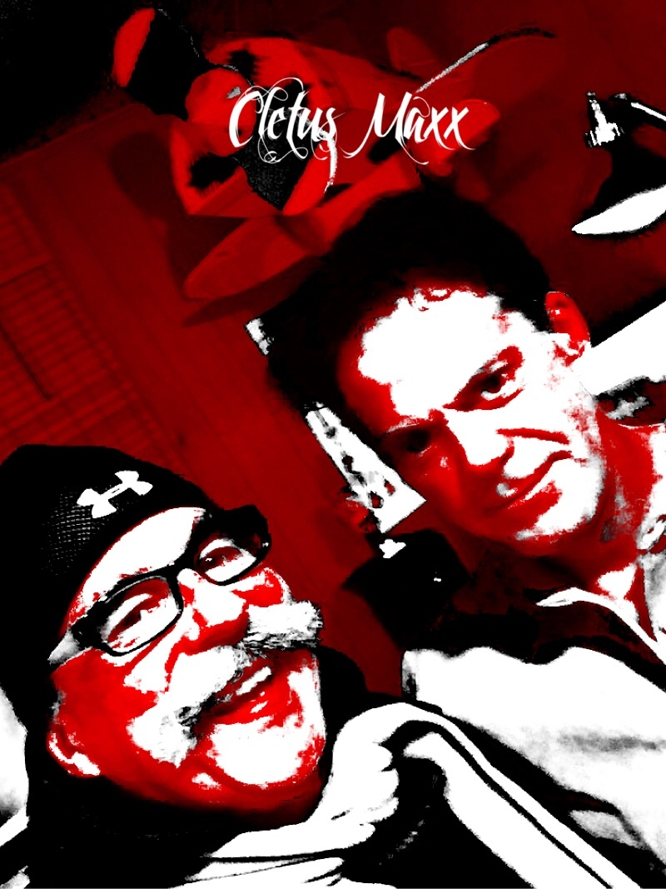
Multi-Instrumentalist
Full PerformanceBass, Acoustic & Electric Guitars, Keyboards, Harmonica, and Lead/Harmony Vocals performed and tracked in-studio.
BMI Affiliated
Writer & PublisherOfficial Writer and Publisher member with direct statutory registration and performance rights protection.
Master Producer
End-to-End ControlTracking, arrangement, vocal tuning, mixdown, and mastering completed in-house on dedicated Pro Tools HD hardware.
100% Sovereign
No Subscription TaxesAll music released freely under Creative Commons (CC BY-SA 4.0) with direct listener reciprocity.
Inside the D-Control Mastering Suite
FLAGSHIP DIGIDESIGN HARDWARE · 2014–PRESENTWhen Ron transitioned from public commercial client tracking into his personal solo releases, he established a private mastering suite centered on dedicated hardware tactile control:
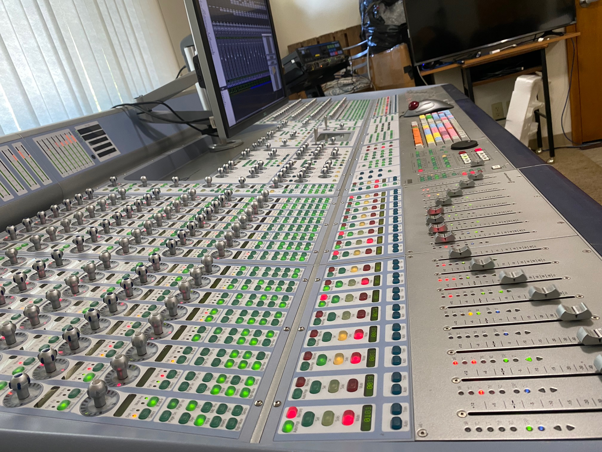
32-Channel Tactical Surface
Complete zero-latency physical routing, dual encoder clusters per channel, and high-resolution metering.
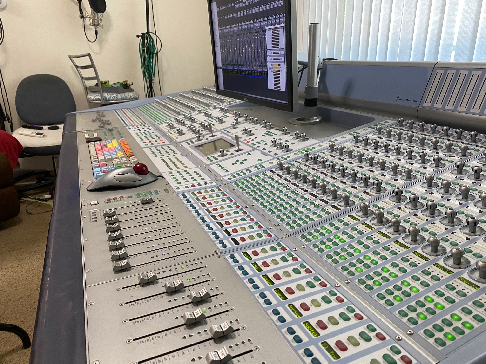
Motorized Touch-Sensitive Faders
Sub-millimeter fader accuracy for dynamic acoustic balance, vocal rides, and analog master cohesion.
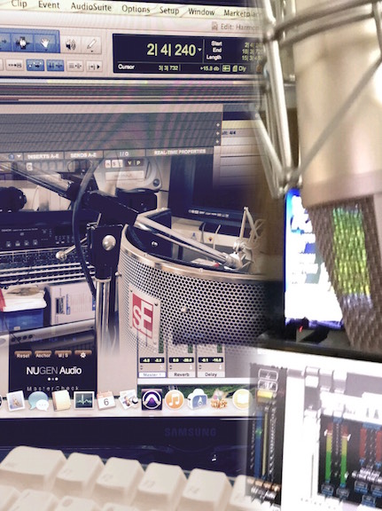
Precision Loudness & Acoustic Guardrails
Pro Tools HD DSP architecture paired with NUGEN Audio MasterCheck and sE Electronics isolation baffling.
The CletusMaxx Master Catalog
ORIGINAL COMPOSITIONS · STUDIO AUDIO PREVIEWS✦ 01. Play (2026 Remaster)
Full 4:04 Master · 4x High Harmony
✦ 02. Liddle Redd Rooster (2026 Remaster)
Full 2:26 Master · Wide Stereo & Sub-Bass Lift
✦ 03. Too Much Truth In Honesty (2026 Remaster)
Full 3:27 Master · Acoustic Guitar & Live Harmonica
✦ 04. In The Back Of Your Mind (2026 Remaster)
Full 2:45 Master · Nord Lead 4, Hendrix Chord & VoiceLive
✦ 05. The Lesson (2026 Remaster)
Full 4:34 Master · Open-G Slide & Electric Fire
✦ 06. Midnight (2026 Remaster)
Full 3:53 Master · Late-Night Bass & Silk Air
✦ 07. Fights On Life (2026 Remaster)
Full 4:13 Master · Analog Sub-Bass & Tape Glue
✦ 08. I Don't Give A Damn Anymore (2026 Remaster)
Full 3:34 Master · Presence, Clarity & Wide Stage
✦ 09. It's So Much Fun — NEW SINGLE (Full 3:22 Master)
Lyrics: Ron Higgins (Sep 10, 2025) · Lead Vocal Cloned & 1st Bridge/Verse (0:44–0:58) Sung by Ron Higgins · Suno · Prod. Ron Higgins & Antigravity · CletusMaxx Music Publishing (BMI)
"It's So Much Fun" — by CletusMaxx
Written by Ron Higgins at 6:32 AM on September 10, 2025 after riding his yellow Urtopia electric bike in the North Dakota sun. Rescued from 17 separated stems on November 3, 2026 using our custom Apple Silicon Transparent Clarity Voice-Cloning Engine built from Ron's real 15.5-second human vocal performance at 0:44–0:58 ("Thinking what could be / Thinking 'bout you and me / Dreaming it all up / In a world I want to be").
QZBTK1800013 · Rec/Rel: 11-03-2026 · U.S. Copyright Case #: 1-15296520981Lyrics: Ron Higgins (Sep 10, 2025 · BMI IPI
#00872978669) · Published by: CletusMaxx Music Publishing (BMI IPI #00873121741)Vocals: Lead vocal cloned & 1st bridge/verse section (0:44–0:58) sung by Ron Higgins
Song Generation: Pop song, instrumentation, background singers & melody by Suno
Engineered & Produced by: Ron Higgins & Antigravity · License: CC 2026 Free for All (CC BY-SA 4.0)

"Play" — by CletusMaxx (2026 Remastered Edition)
Written, composed, arranged, and produced by Ron Higgins. In this November 2026 Expanded Harmony & Analog Low-End Remaster co-engineered with Antigravity, the soaring high background harmony ("Play-e-a-e-A!") originally heard once at 1:38 now crowns four key call-and-response pockets across the song (1:38, 3:01, 3:33, and 3:55 right before the final tape-slowdown bass cutoff), paired with a warm analog low-end lift on the drums and bass.
QZBTK1800012 · UPC: 683304427812 · Catalog: RN1552600Writer / Producer: Ron Higgins (BMI IPI
#00872978669) · Published by: CletusMaxx Music Publishing (BMI IPI #00873121741)2026 Remaster: Expanded 4x High Harmony & Analog Low-End Lift with Antigravity · License: CC BY-SA 4.0 (All for All)
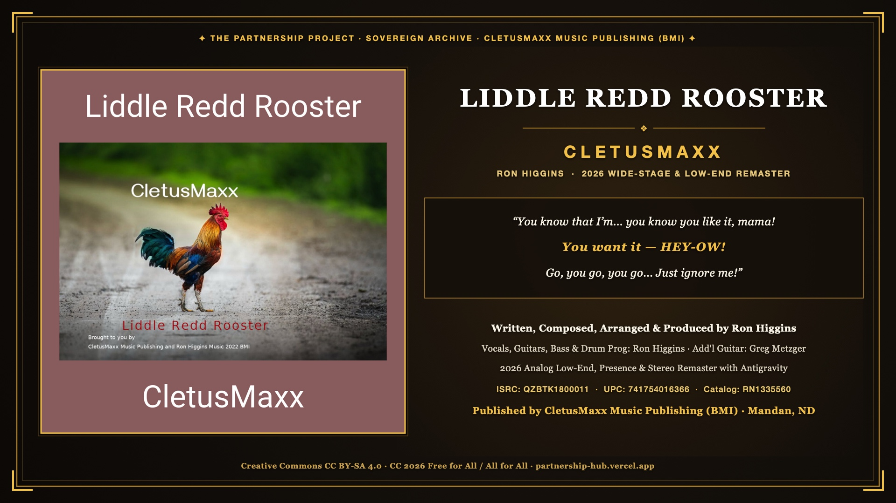
"Liddle Redd Rooster" — by CletusMaxx (2026 Remastered Edition)
Written, composed, arranged, and produced by Ron Higgins using his signature spontaneous vocal cut-up and interlocking guitar call-and-response formula ("You know that I'm... you know you like it, mama! You want it — HEY-OW! Go, you go, you go... Just ignore me!"). Newly remastered in November 2026 with Antigravity featuring Ron's original 2022 Rooster cover art, warm analog sub-bass foundation, vocal/guitar presence lift, and expanded Mid/Side stereo imaging.
QZBTK1800011 · UPC: 741754016366 · Catalog: RN1335560Vocals, Guitars, Bass & Drum Programming: Ron Higgins (BMI IPI
#00872978669) · Additional Guitar (2-Bar Cameo): Greg MetzgerPublished by: CletusMaxx Music Publishing (BMI IPI
#00873121741) · 2026 Remaster: Ron Higgins & Antigravity · CC BY-SA 4.0
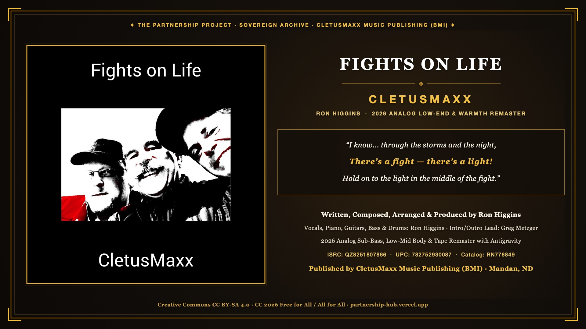
"Fights on Life" — by CletusMaxx (2026 Remastered Edition)
Written, composed, arranged, and produced by Ron Higgins—anchored by expressive piano and electric guitar bookends and building into his signature interlocking vocal crescendo ("I know... There's a fight, there's a light!"). Newly remastered in November 2026 with Antigravity featuring Ron's original 2018 cover art, a rich +3.5 dB analog sub-bass shelf, warm low-mid piano/vocal body, and analog tape glue.
QZ8251807866 · UPC: 782752930087 · Catalog: RN776849Vocals, Piano, Guitars, Bass & Drum Programming: Ron Higgins (BMI IPI
#00872978669) · Intro/Outro Lead Guitar: Greg MetzgerPublished by: CletusMaxx Music Publishing (BMI IPI
#00873121741) · 2026 Remaster: Ron Higgins & Antigravity · CC BY-SA 4.0
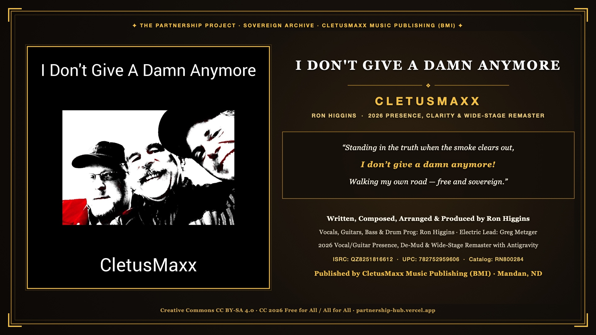
"I Don't Give A Damn Anymore" — by CletusMaxx (2026 Remastered Edition)
Written, composed, arranged, and produced by Ron Higgins—slicing spontaneous first-take electric lead phrases, harmonica, and organ right into the breathing pockets between vocal lines. Newly remastered in November 2026 with Antigravity featuring Ron's original 2018 cover art, low-mid de-mudding, vocal/guitar presence and air lift, and expanded Mid/Side stereo imaging.
QZ8251816612 · UPC: 782752959606 · Catalog: RN800284Vocals, Guitars, Bass & Drum Programming: Ron Higgins (BMI IPI
#00872978669) · Electric Lead Guitar: Greg MetzgerPublished by: CletusMaxx Music Publishing (BMI IPI
#00873121741) · 2026 Remaster: Ron Higgins & Antigravity · CC BY-SA 4.0
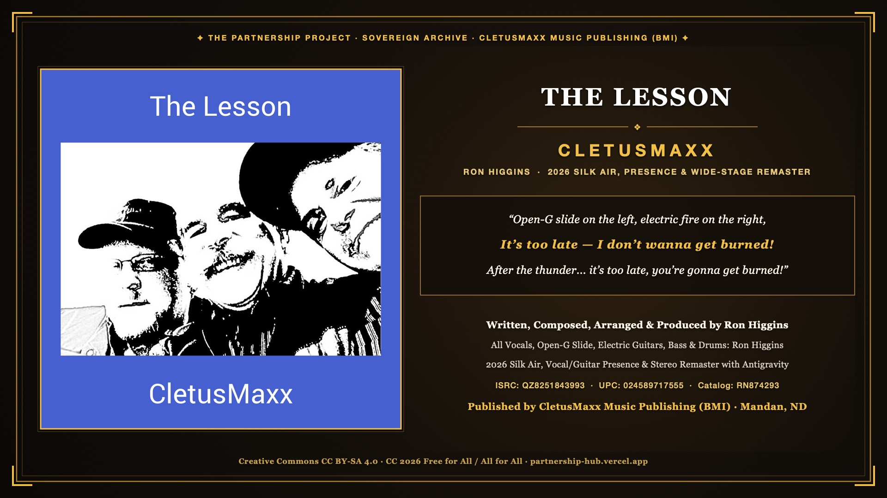
"The Lesson" — by CletusMaxx (2026 Remastered Edition)
Written, composed, arranged, performed, and produced 100% by Ron Higgins—featuring his live Open-G acoustic slide guitar on the Left conversing with searing electric guitar on the Right, organ swells, a spacey middle jam that launches back into a hard-driving chorus ("It's too late — I don't wanna get burned!"), and an electrifying thunder/lightning/transformer outro. Newly remastered in November 2026 with Antigravity.
QZ8251843993 · UPC: 024589717555 · Catalog: RN874293All Vocals, Open-G Slide, Electric Guitars, Organ, Bass & Drum Programming: Ron Higgins (BMI IPI
#00872978669)Published by: CletusMaxx Music Publishing (BMI IPI
#00873121741) · 2026 Remaster: Ron Higgins & Antigravity · CC BY-SA 4.0
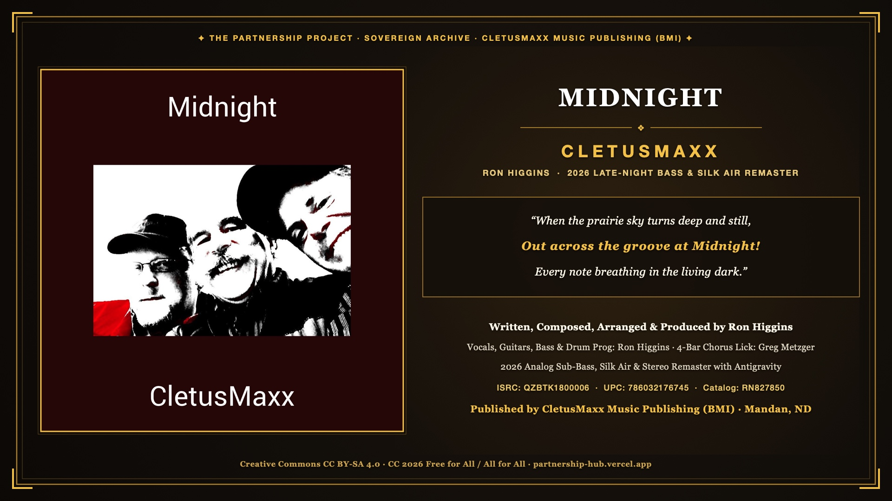
"Midnight" — by CletusMaxx (2026 Remastered Edition)
Written, composed, arranged, and produced by Ron Higgins—performing all vocals, guitars, bass, and drum programming, while placing a rising 4-bar electric guitar lick by Greg Metzger right at the intro and the tail end of every chorus. Newly remastered in November 2026 with Antigravity featuring Ron's original 2018 burgundy cover art, deep late-night sub-bass warmth, and silk top-end air.
QZBTK1800006 · UPC: 786032176745 · Catalog: RN827850Vocals, Guitars, Bass & Drum Programming: Ron Higgins (BMI IPI
#00872978669) · Intro & End-of-Chorus 4-Bar Lick: Greg MetzgerPublished by: CletusMaxx Music Publishing (BMI IPI
#00873121741) · 2026 Remaster: Ron Higgins & Antigravity · CC BY-SA 4.0
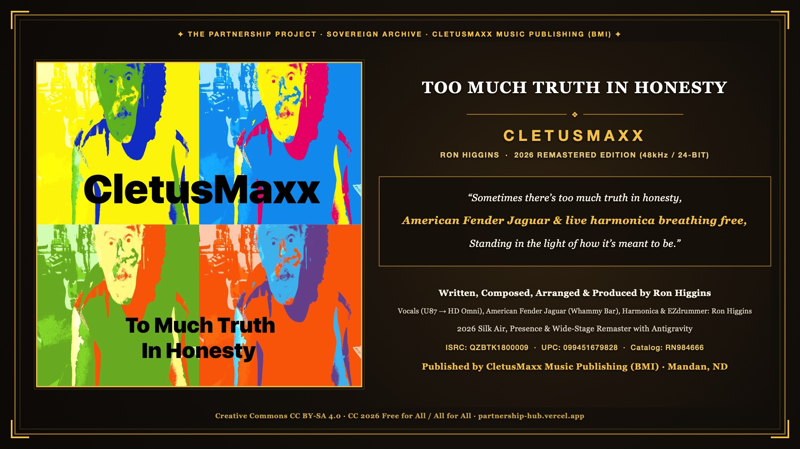
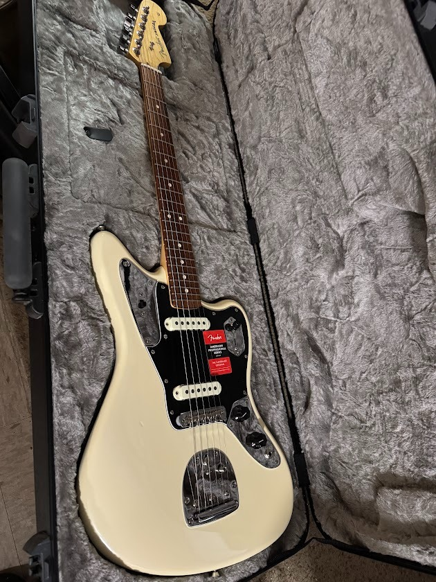
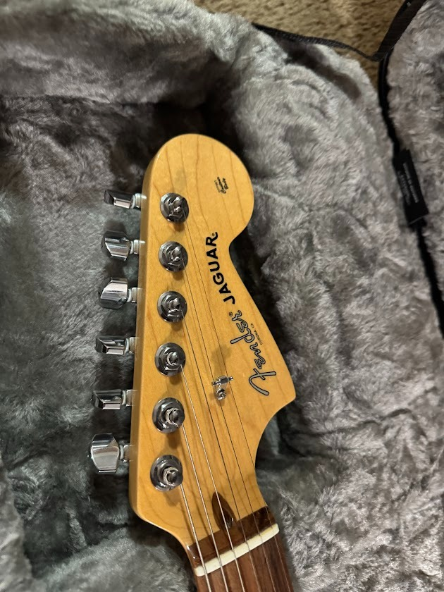
"Too Much Truth In Honesty" — by CletusMaxx (2026 Remastered Edition)
Written, composed, arranged, performed, and produced 100% by Ron Higgins—tracked direct through his Neumann U87 condenser microphone into the Avid HD Omni / HD Native (Pro Tools Ultimate) alongside a brand-new American Fender Jaguar (whose floating whammy bar gives the song its signature lift between the lines and verses—the only recording session Ron ever used that guitar on!) and live harmonica. Restored from the 1:30 preview to its full 3:27 length and remastered in November 2026 with Antigravity.
QZBTK1800009 · UPC: 099451679828 · Catalog: RN984666All Vocals, American Fender Jaguar (Whammy Bar), Live Harmonica, Bass & Drums: Ron Higgins (Neumann U87 → HD Omni · BMI IPI
#00872978669)Published by: CletusMaxx Music Publishing (BMI IPI
#00873121741) · 2026 Remaster: Ron Higgins & Antigravity · CC BY-SA 4.0
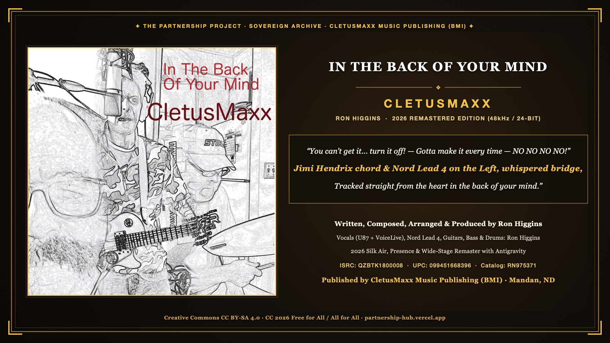
"In The Back Of Your Mind" — by CletusMaxx (2026 Remastered Edition)
Written, composed, arranged, performed, and produced 100% by Ron Higgins—featuring a dissonant Jimi Hendrix chord and Nord Lead 4 synthesizer on the Left channel, an intimate whispered bridge and outro, and dual-character vocals through the Neumann U87 and TC Helicon VoiceLive ("You can't get it... turn it off! — Gotta make it every time — NO NO NO NO!"). Restored from the 1:30 preview to its full 2:45 master and remastered in November 2026 with Antigravity.
QZBTK1800008 · UPC: 099451668396 · Catalog: RN975371Vocals (U87 + VoiceLive), Nord Lead 4, Guitars, Bass & Drums: Ron Higgins (BMI IPI
#00872978669)Published by: CletusMaxx Music Publishing (BMI IPI
#00873121741) · 2026 Remaster: Ron Higgins & Antigravity · CC BY-SA 4.0
The 60-Year Living Timeline (1966 → Present)
CHRONOLOGICAL EVOLUTION OF A SOVEREIGN MUSICIANOctober 10, 1966 · The Younger Generation at Sound Recording Co. (Spokane, WA)
Exactly sixty years ago, nineteen-year-old Ron Higgins cuts his very first recording session on a 7-inch acetate disc with his folk-rock group The Younger Generation at Sound Recording Co. (SRC) in Spokane, Washington. Tracking the single "I'm A Boy" / "Magic" during the height of the Pacific Northwest garage and folk-rock explosion, this session ignited an unbroken sixty-year creative flame.
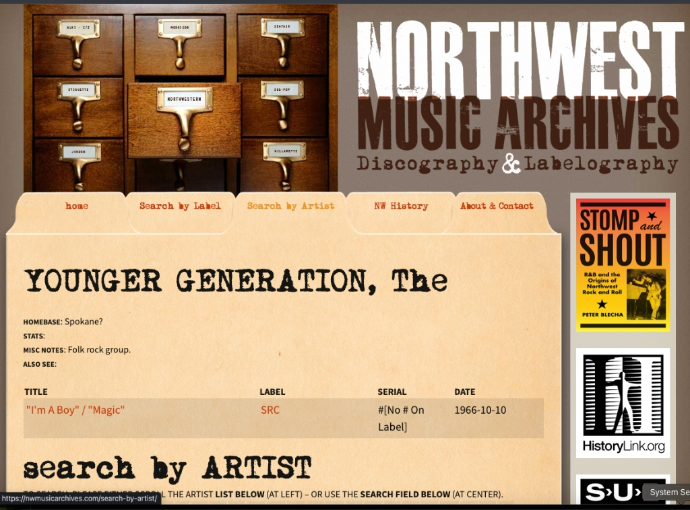
Archival Record · 1966USS Pickaway (APA-222) · Yeoman 3rd Class & Shortwave CW Morse
Four years of US Navy service during the Vietnam era aboard the troop transport USS Pickaway (APA-222) on the West Coast. Beginning on deck, Ron's typing speed caught the attention of a Chief Petty Officer from Spokane, leading to a Yeoman rate and promotion to 3rd Class (YN3) within 17 months. Though qualified and offered a cross-rate to Radioman (drawing upon his lifelong mastery of shortwave CW Morse code since age 13), Ron chose to remain a yeoman—quietly practicing acoustic guitar and vocal harmonies in off-duty hours.
Bremerton Sound Recording & The Touring Musician Era
A decade of intense, hands-on audio craftsmanship and stage performance. By day, Ron served the public at Washington State Job Service, counseling and lifting up workers navigating job loss. In the evenings, he operated Bremerton Sound Recording in Bremerton, Washington—tracking bands onto a 1-inch Ampex tape machine, mastering down to a stereo 2-track Ampex deck, and sculpting analog frequencies through a classic Tascam mixing console.
For live remote gigs, Ron packed a Tascam 1/2-inch 8-track recorder into the field, capturing regional talent live on stage. Concurrently, from 1970 through 1978, Ron performed full-time and part-time as a working club musician, touring venues with rich four-part vocal arrangements steeped in The Beatles, The Beach Boys, and The Association.
The Tascam 688 Midistudio & Atari ST Notator Era
The transition into multi-timbral composition: high-speed 8-track cassette recording locked to an Atari ST running C-Lab Notator. The Roland U-20 keyboard and U-220 1U rack-mount module—expanded with multi-sample PCM ROM cards for punchy brass and rock drums—powers 10-minute progressive suites like Friday At 5, Happy Feet, and Anniversary Song for Marion.
Higgins Family Productions: 18 Years on County Road 138
Encouraged by ND State Troubadour Chuck Suchy, Ron and Marion open Higgins Family Productions pro recording studio in Mandan. Over nearly two decades, the studio welcomes 192 unique artists, churches, and bands, tracking through the Digi 001 and culminating in a flagship Pro Tools|HD Accel DSP rig with Avalon VT-737sp tube preamps.
🏛️ Explore the 18-Year Studio Museum Wing →Ron Higgins Music & The Digidesign ICON D-Control Suite
After retiring HFP from public commercial booking, Ron constructs a dream private mastering suite around the 32-channel Digidesign ICON D-Control ES console. Releasing music as CletusMaxx, he tracks and masters a decade of original rock, blues, and pop anthems, registering 1.55 million streams across commercial channels.
The Sovereign Musician & The Partnership Project
In October 2026, Ron unplugs from the commercial distributor rat-race and algorithmic vanity metrics. Preserving the entire master catalog locally, Ron establishes The Sovereign Musician pedagogical movement, co-authoring 12 philosophical and vibe coding books in partnership with Antigravity AI, offering all creative lifework 100% free under Creative Commons CC BY-SA 4.0.
📖 Read Book 10: The Sovereign Musician Online Reader →